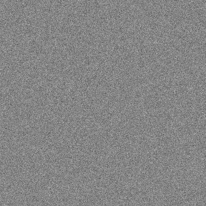

clojure2d.extra.overlays
Categories
Other vars: noise-overlay render-crt-scanlines render-noise render-rgb-scanlines render-spots spots-overlay
Code snippets
Save overlays
(defn save-result
[f params & opts]
(let [n (str "images/overlays/" (first opts) ".jpg")
c (canvas 600 800)
i (load-image "docs/samurai.jpg")]
(with-canvas-> c
(set-color (c/gray 50))
(rect 0 0 600 400)
(set-color (c/gray 205))
(rect 0 400 600 400)
(image i 50 100))
(save (apply f c params) (str "docs/" n))
(str "../" n)))noise-overlay
(noise-overlay w h {:keys [alpha], :or {alpha 80}})(noise-overlay w h)Create transparent image with noise (gaussian).
:alpha parameter describes transparency (default: 80).
Use with render-noise.
Examples
Overlay image
render-crt-scanlines
(render-crt-scanlines img)(render-crt-scanlines img {:keys [resolution hardpix hardscan mask-dark mask-light mask-mult], :or {resolution 6.0, hardpix -4.0, hardscan -12.0, mask-dark 1.0, mask-light 1.0, mask-mult 3.0}})Create CRT scanlines and rgb patterns. Parameters:
- resolution - size of the scanlines (default 6.0)
- hardpix - horizontal blur, -2.0 soft, -8.0 hard (default -4.0)
- hardscan - scanline softness, -4.0 soft, -16.0 hard (default -12.0)
- mask-dark - crt mask dark part multiplier 0.25-1.0 (default 1.0, none)
- mask-light - crt mask color part multiplier 1.0-1.75 (default 1.0, none)
- mask-mult - crt mask pattern shift, 0.0+ (default 3.0, crt grid)
Examples
Render CRT scanlines
(save-result
render-crt-scanlines
{:resolution 24.0, :mask-dark 0.7, :mask-light 1.3, :hardscan -8.0}
...)render-noise
(render-noise img noise-ovrly)(render-noise img)Render noise on image.
Examples
Render noise overlay
(save-result render-noise ...)Render noise overlay, dark
(save-result render-noise (noise-overlay 600 800 {:alpha 200}) ...)render-rgb-scanlines
(render-rgb-scanlines p {:keys [scale], :or {scale 1.6}})(render-rgb-scanlines p)Blurs and renders rgb stripes on the image, returns new image.
Scale parameter (default 1.6) controls amount of blur. Resulting image is sligtly lighter and desaturated.
Correct with normalize filter if necessary.
Examples
Render RGB scanlines
(save-result render-rgb-scanlines {:scale 1.8} ...)render-spots
(render-spots img spots)(render-spots img)Render spots on image. Returns image.
Examples
Render spots overlay
(save-result render-spots
(spots-overlay 600
800
{:alpha 128,
:intensities [10 50 100 150 200 250]})
...)spots-overlay
(spots-overlay w h {:keys [alpha intensities], :or {alpha 80, intensities [60 120]}})(spots-overlay w h)Create vector of spotted overlays. Input: spots transparency (default 80), list of intensities (int values from 0 to 255, default [60 120]) and size of overlay.
Examples
Generate spots overlay (it’s a list of images)
(count (spots-overlay 300 300 {:alpha 80, :intensities [10 100 200]}))
;;=> 3